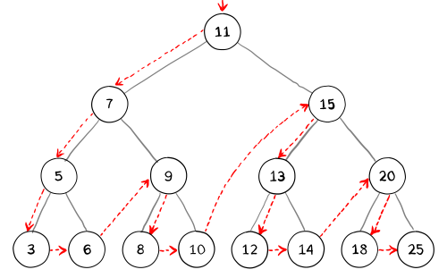
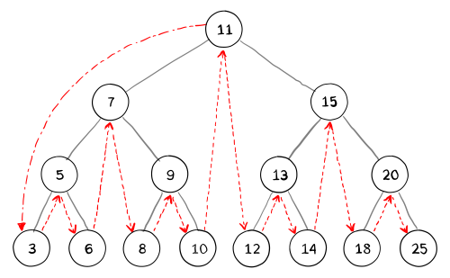
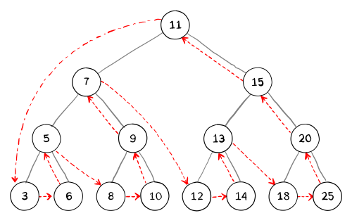

Depth-first search is named as such because the search traverses the entire height of a node before going to the next sibling node.
The general recursive pattern for traversing a binary tree is this: At
node N do the following:
N again.
N again.
N itself.These steps can be done in any order. If (L) is done before (R), the process is called left-to-right traversal, otherwise it is called right-to-left traversal.
The following methods show left-to-right traversal: pre-order, in-order and post-order.

Pre-order: 11, 7, 5, 3, 6, 9, 8, 10, 15, 13, 12, 14, 20, 18, 25
The pre-order traversal is topologically sorted (linear order), because a parent node is processed before any of its child nodes is done.

In-order: 3, 5, 6, 7, 8, 9, 10, 11, 12, 13, 14, 15, 18, 20, 25
In a binary search tree, in-order traversal retrieves data in sorted order.

Post-order: 3, 6, 5, 8, 10, 9, 7, 12, 14, 13, 18,25, 20, 15, 11